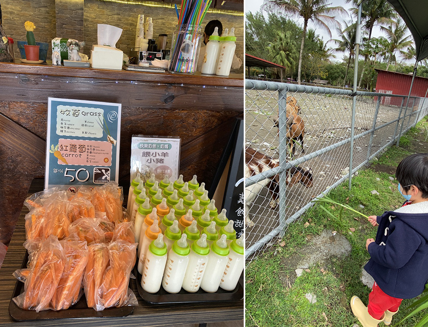
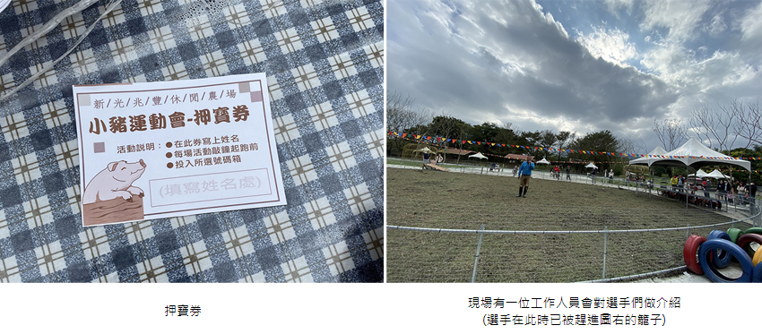

身為花蓮人，我一直到小二上台北之前，都還沒去過太魯閣，直到大學才跟朋友去。就好似台灣的美景都還沒走完，卻一直想往國外跑，在身邊的總是比較不珍惜唄！兆豐農場就是這樣的景點，離娘家路程只有20分鐘，但我從未去過。每年過年都要回去花蓮娘家，今年因武漢肺炎疫情，不敢去人潮擁擠的室內場所，所以找了一天前去兆豐農場。
我兒身高不滿115cm，快四歲，不用票，花蓮人三位（花蓮鄉親優惠方案）＋曾經的天龍人老公（全票）250*3+350=1100。
| 位於售票區左邊的園區地圖，可以看出兆豐農場腹地很大 |
因園區很大，所以有設置小火車，我完全放棄乘坐小火車，因我們快十點半才到兆豐農場，不想把時間浪費在等火車上。我們租了波力，八百兩小時，我們有逾時一小時 再付三百 共1100，租個車跟入園的票價一樣了(冏)，租車價格是google評論裡比較多人詬病的地方。
| 除非很能走路，否則一定要租車 | ||
| 我們共四大一小，小的用抱的 |
農場裡活動很多，但因為上有老母下有幼兒，想走比較輕鬆的路線，就沒有照著時間表參與，我自己很想看明星動物互動秀，但我兒完全不想坐在觀賞席等候，只好作罷！
| 優惠訊息公告欄，我這次就使用了花蓮鄉親優惠方案 | |
| 要戴口罩才能入園，有人沒戴被上圖這位盡責警衛攔住 | |
| 入園之後趕快殺去遠方的墾夢故事館裡買防小黑蚊乳液 | |
園區裡的商店，Google評論許多人提到園區裡有很多小黑蚊，小黑蚊你們都知道的，不像一般的蚊子，手一揮就飛走，小黑蚊可是會牢牢吸附在皮膚上的，因此一入園，我就先來這買網友推薦的防蚊乳(小黑吻乳) 跟止癢膏(小黑吻膏)。商品陳設很不吸睛，若不是網友推薦，我完全不會想買，我還看了一下瓶蓋上面有沒有灰塵，竟然沒有灰塵！製造日期也不是很久之前的，我這就叫做不識貨！
往園區裡面走去，看到這個地方我心涼一半，要把我兒從這個區域拔走勢必要經歷一番大戰，我買門票進來可不是要讓他把時間，耗在這種隨處可見且免費的遊樂設施，還好滑梯上有未乾的雨水，他才放棄。滑梯旁的滑索，倒是想讓我兒一試，不過他不敢玩，另外旁邊有限30KG的立牌，但還是看到有不少大人在玩，現場無人看管，出意外後果自負囉！
| 到達可愛動物區之前，經過了醜醜的池塘跟關閉的區域 |
| 先到兆豐驛站買餵食動物的糧食 |
| 注意喔 門口右手邊這堆牧草，要付錢才可以拿取 |
|  |
| 牌子上有寫這些東西可以餵食哪些動物，光餵食我們就在可愛動物區耗了三小時 |
我們來到了可愛動物區，在可愛動物區用牧草餵食的時候，手一定只能握在粗莖處，因為羊吃草的拉力很大，若手握在葉片上會被割傷，並且一定要跟孩子耳提面命手指頭不要靠近動物嘴巴。另外，餵完的奶瓶不要隨便擱置喔，請放到兆豐驛站裡的奶瓶回收桶。
| 吃飽睡 睡飽吃的豬 | ||
這個區域的設計很難餵食到兔子，紅蘿蔔條督不進去旁邊的鐵網，兔子也不會被紅蘿蔔條吸引，跟兔子關在一起的火雞，為何火雞被歸類在可愛動物區我無法理解。
駱駝本人的嘴巴很驚悚，一嘴看起來頗黏的唾液，感覺被咬到一口的話手會腐爛，所以餵牧草的時候大家只敢站的老遠，紅蘿蔔因為比較短。若要餵食，就放在圍欄上的柱子(圖片黃圈處)，但別放太遠，這隻駱駝很懶 不會走過去，他活動的區域很小。而其他不可褻玩的可愛動物還有樹懶/狐獴。
接著來到了，象龜體驗區鐵門可以自己打開進入，如告示牌所示 裡頭飼養兩種象龜，可以輕輕地撫摸，也可餵食。
 |
|
| 嘴裡特寫 長得跟老人家的嘴蠻像的，還有牽絲的口水 |
可愛動物區餵得差不多了，這時候老公也借了電動車回來，我們就到處逛逛，位於園區盡頭處的乳牛專賣店，店外有小乳牛。
而店內就擺著一些我買不下去，具有台灣美學農場紀念品。食品倒是可以試試看 我媽買了一罐草莓羊乳片孝敬我兒，也有熱食區。下圖為店內全景，還頗寬敞的，嬰兒車可入內，所以我們點了些餐點在這稍做休息。
離開乳牛專賣店後 我們前往王菲草原，天啊！超普通的草原，到底跟王菲有啥關係？請見上圖告示牌，喔喔，原來是廣告，但為何放棄中國一堆奇景不去拍，要大老遠跑來這拍就不曉得了，這片草原真的有夠沒特色的啊~
| 來都來了，還是得找點樂子做 |
我兒竟然不想離開這窮極無聊的草原，我們最後作勢要開車走他才罷休。我看了一下時間，下午三點的小豬運動會要開始了，又把車開回去可愛動物區。
|  |
我們先領到一張押寶券，而現場工作人員不斷用大聲公強調：不要急著投票，同時還是有很多人不看內文就留言的網友超像，完全忽略工作人員，還是將押寶券投進票箱。選手有十隻，兩個品種：
1. 小耳豬：黑色，來自台東，五年才會長到肉豬大小，山豬血統有野性。
2. 麝香豬：黑白，流汗有麝香味，可當寵物豬，喜歡玩。
介紹完之後，工作人員會先讓這些選手跑周圍障礙，完成的豬隻才會晉級，也透過這個障礙賽，讓大家看選手狀況，另有有獎徵答送小禮物，這個時候才是投票時間，根據您自己的觀察，投進下一場直線賽 ，覺得會勝出的豬的號碼。
| 太棒了，抽到這個 |
因為獎品數目有限，所以就算有押對寶，也不是保證有獎，需要用抽的，我老母很幸運的中到獎，我心裡一直祈禱，拜託不要拿到紀念品。
三點半左右看到一堆鵝出來逛街，應該是園區的鵝樂團遊行活動，但我只聽到工作人員帶領鵝群的哨子聲。還有鵝叫聲。最後車子開到景觀湖，到橋上走走跟餵魚，就結束了兆豐農場之旅。
| <不專業攻略> | |||||||||||||
|
|||||||||||||
結語
鸚鵡區跟鳥園雖然品種很多，但我不是什麼鳥類專家，所以看得有點疲乏，孩子也看得不耐煩，是我個人較不喜歡的區域，只拍了幾張照片。 可愛動物區待最久，買了很多餵食動物的糧食，總體來說蠻推薦帶小孩去的！